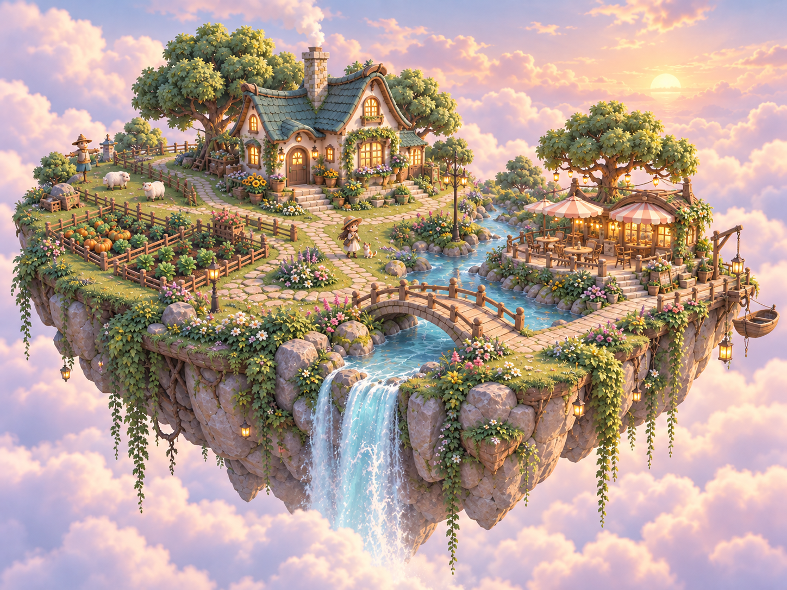
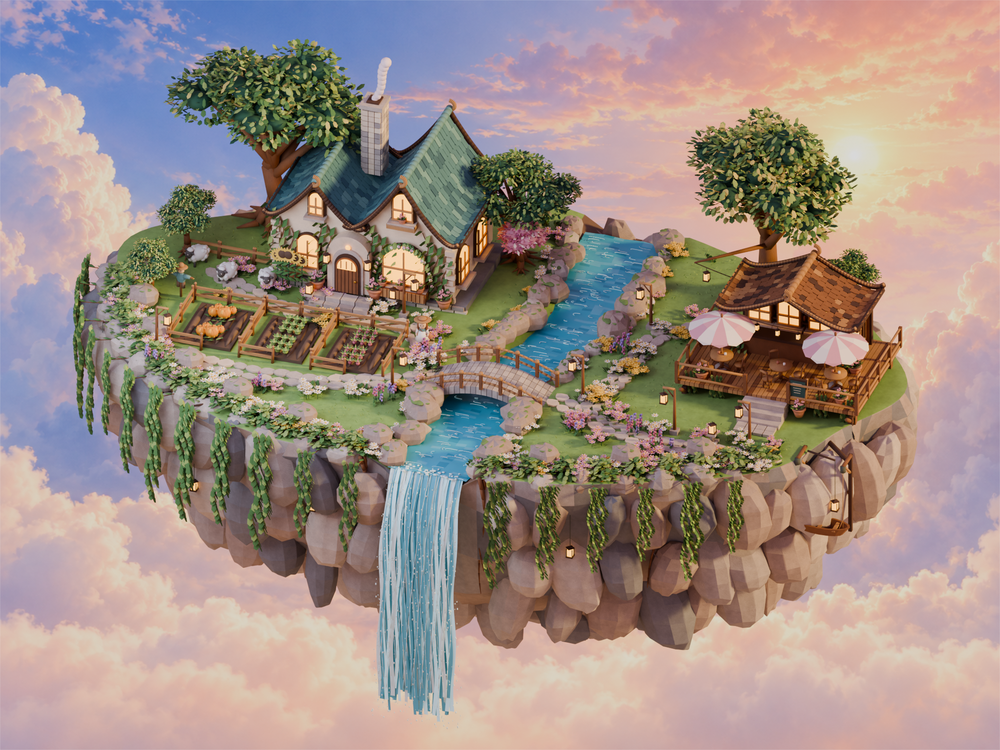
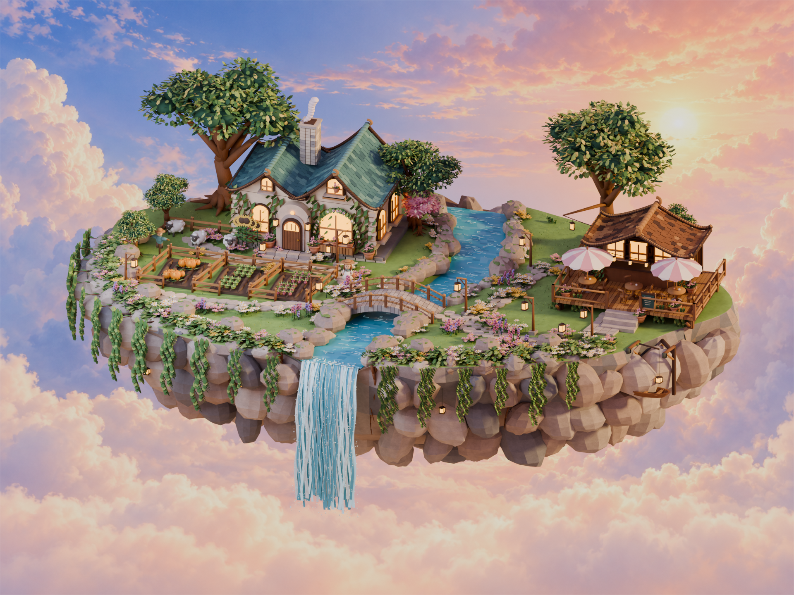

游戏版在此基础上独立控制角色、作物与环境动态，实时光照和作物状态会与离线静帧有所不同。
本轮以精修版为基础调整屋顶高度、岛体厚度、河道弧线和花丛疏密。三张图保持各自真实构图，未做对齐拉伸。
这里展示的是 Blender 静帧；流水、微风、炊烟、小船摆动及种植交互请进入网页体验。当前仍未达到逐像素一致。



游戏版在此基础上独立控制角色、作物与环境动态，实时光照和作物状态会与离线静帧有所不同。